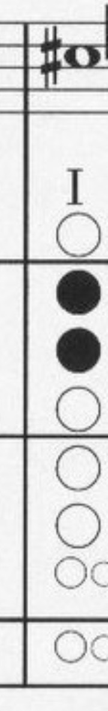

🐣🎶
直笛大冒險
升F升C下樓梯・免費・免登入・麥克風吹直笛控制
🐣 小朋友資料卡
⚠️ 請用綽號，不要寫真實姓名喔！
🎯 調音器
目標① 升F (F#5) 740Hz
目標② 升C (C#5) 554Hz
-- Hz
尚未啟用麥克風
🧱 0 層
🌟 最佳 0
🏆 排行榜
📱 掃碼自己練
用手機相機掃一下就能開遊戲練習！
老師可把這張圖列印出來貼在教室。
🌈 玩法：每一層樓的洞口都標了目標音，對著麥克風吹準那個音（含指法），小雞才會往下鑽過洞。
🐣 沒吹對就停在原地、不會往下，也不會扣血，慢慢對指法就好。
💡 吹錯會顯示你吹了什麼音、再對照指法重吹。
升C指法圖：
